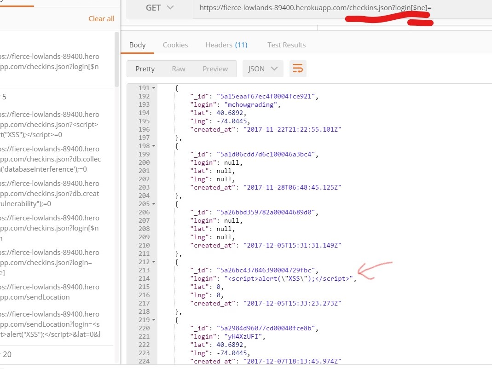

This app collects user login and location data and returns nearby landmarks and users. My task is to investigate the relative security of this app and address the various risks and privacy issues.
I tested this app using the regular interfaces availiable via a web browser, as well as Postman to set up some more advanced POST and GET requests
Two main privacy issues and one main security issue were found. Privacy wise, it is very bad practice to leave location data where it is readily availiable to any visitor to the page. The default path to the app via a web browser displays the history of every user's checkins, including their location. This is a major breach of privacy, as it allows users to discover other users' locations. The second privacy issue is via the /checkins.json interface. This path is designed to give all of a user's checkins when given a specific login, but there is a way to cheat this system, and obtain every user's data without any knowledge of their login. The final security issue is that users can inject code (javascript) into the database via the /sendLocation post path. If this code is retrieved by a user's web browser, a user is vulnerable to a whole range of cyber attacks.
HIGH RISK Cross Site Scripting: Javascript can be injected into the Database via malicious access to the /sendLocation POST path. If the login parameter is javascript, it is stored and will later be served to anyone accessing the page by the default GET path. Needless to say this creates all kinds of risks to users. An example of the unwanted javascript being executed on the default GET path is shown below:
To address this issue I suggest adding a few lines of code like this to the path that accesses the body of the POST request in the js server:
var cleanData = request.body.login;
cleanData = cleanData.replace(/[^\w\s]/gi, '');
This will remove all special characters from the body of a login, so attempted javascript injection will be rendered harmless.
MEDIUM RISK Database breach: It is possible to access all the content in the database through the /checkins.json GET path if the user substitutes login for login[$ne]. This is a trick to get all of the data in the database not equal to the query string, meaing the user does not need to know any login names, but can still get the data associated with every login: (also note the injected javascript residing in the database)
To address this issue I suggest a similar fix to the cross site scripting example, except in this case parse out specifically the $ and characters to make sure this trick doesn't work
MEDIUM RISK Poor Privacy Control: This security issue is an overarching app design flaw. User location data is availiable for any visitors to the page via the default GET path through a web browser. This is a breach of user privacy. Such information should not be readily availiable to anyone on the internet:
To address this issue I suggest removing this homepage functionality altogether, and to remodel the app to hide sensitive user input from anyone except for a user with the proper credentials.
The highest risk items are easy fixes. Simply add serverside lines of code parsing out dubious user input, and the app will be much better protected from Cross-Site Scripting and Database breaches. The Last item will be more costly to fix, as the main idea of that feature is essentially flawed. It is not ok to display sensitive data like that, so the default GET interface must be reimagined entirely in a way that protects user privacy.